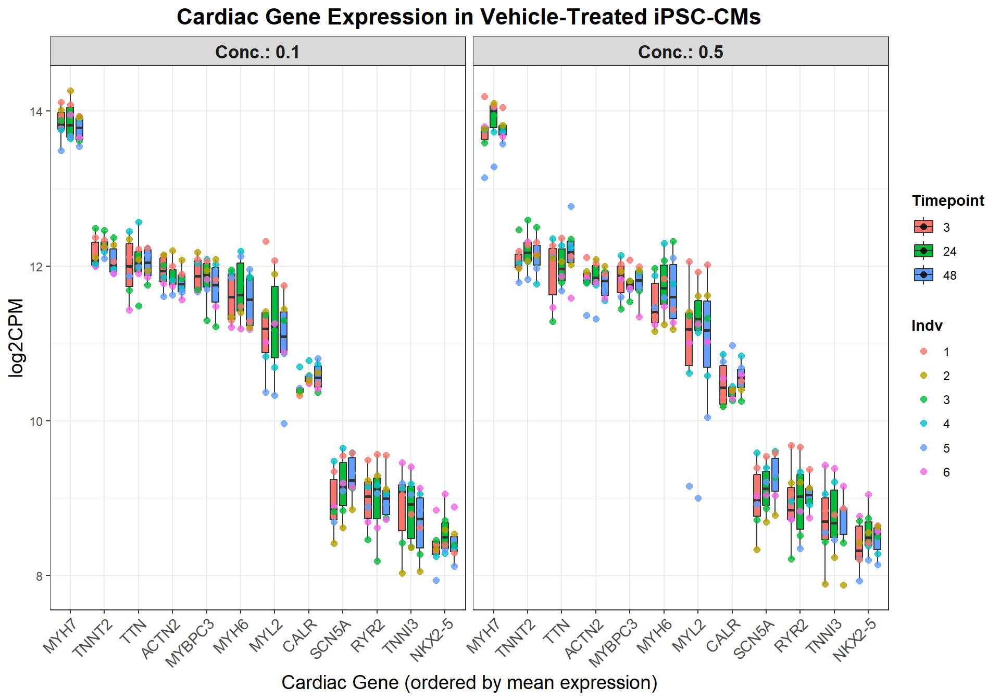

Figure_S6
Last updated: 2025-08-10
Checks: 6 1
Knit directory: Paul_CX_2025/
This reproducible R Markdown analysis was created with workflowr (version 1.7.1). The Checks tab describes the reproducibility checks that were applied when the results were created. The Past versions tab lists the development history.
The R Markdown is untracked by Git. To know which version of the R
Markdown file created these results, you’ll want to first commit it to
the Git repo. If you’re still working on the analysis, you can ignore
this warning. When you’re finished, you can run
wflow_publish to commit the R Markdown file and build the
HTML.
Great job! The global environment was empty. Objects defined in the global environment can affect the analysis in your R Markdown file in unknown ways. For reproduciblity it’s best to always run the code in an empty environment.
The command set.seed(20250129) was run prior to running
the code in the R Markdown file. Setting a seed ensures that any results
that rely on randomness, e.g. subsampling or permutations, are
reproducible.
Great job! Recording the operating system, R version, and package versions is critical for reproducibility.
Nice! There were no cached chunks for this analysis, so you can be confident that you successfully produced the results during this run.
Great job! Using relative paths to the files within your workflowr project makes it easier to run your code on other machines.
Great! You are using Git for version control. Tracking code development and connecting the code version to the results is critical for reproducibility.
The results in this page were generated with repository version 6e218b7. See the Past versions tab to see a history of the changes made to the R Markdown and HTML files.
Note that you need to be careful to ensure that all relevant files for
the analysis have been committed to Git prior to generating the results
(you can use wflow_publish or
wflow_git_commit). workflowr only checks the R Markdown
file, but you know if there are other scripts or data files that it
depends on. Below is the status of the Git repository when the results
were generated:
Ignored files:
Ignored: .RData
Ignored: .Rhistory
Ignored: .Rproj.user/
Ignored: 0.1 box.svg
Ignored: Rplot04.svg
Ignored: analysis/figure/
Untracked files:
Untracked: analysis/Figure_S6.Rmd
Note that any generated files, e.g. HTML, png, CSS, etc., are not included in this status report because it is ok for generated content to have uncommitted changes.
There are no past versions. Publish this analysis with
wflow_publish() to start tracking its development.
📌 GTEX Tissue specific correlation heatmap
📌 Load Required Libraries
library(ggplot2)
library(dplyr)Warning: package 'dplyr' was built under R version 4.3.2library(tidyr)Warning: package 'tidyr' was built under R version 4.3.3library(org.Hs.eg.db)Warning: package 'AnnotationDbi' was built under R version 4.3.2Warning: package 'BiocGenerics' was built under R version 4.3.1Warning: package 'Biobase' was built under R version 4.3.1Warning: package 'IRanges' was built under R version 4.3.1Warning: package 'S4Vectors' was built under R version 4.3.2library(clusterProfiler)Warning: package 'clusterProfiler' was built under R version 4.3.3library(biomaRt)Warning: package 'biomaRt' was built under R version 4.3.2library(pheatmap)Warning: package 'pheatmap' was built under R version 4.3.1📌 Load Data
# Read the CSV file into R
# 📁 Step 0: Load Count Data
file_path <- "data/count.csv"
df <- read.csv(file_path, check.names = FALSE)
# Remove 'x' from column headers
colnames(df) <- gsub("^x", "", colnames(df))
# View the updated dataframe
head(df)
# View updated column names
colnames(df)
# Step 1: Calculate IPSC_CM
# Select columns with 'VEH' in their names
veh_columns <- grep("VEH", colnames(df), value = TRUE)
# Calculate the average logCPM across VEH samples
df$IPSC_CM <- rowMeans(df[, veh_columns], na.rm = TRUE)
# Create a new dataframe with ENTREZID, SYMBOL, and IPSC_CM
veh_avg_df <- df[, c("Entrez_ID","IPSC_CM")]
library(biomaRt)
# Step 2: Read the Tissue_Gtex dataset
Tissue_Gtex <- read.csv("C:/Work/Postdoc_UTMB/CX-5461 Project/RNA Seq/Alignment/Concatenation/Data Integration/Human Heart Genes/Tissue specificity/Tissue_Gtex.csv")
# Step 3: Convert Ensembl IDs to Entrez IDs using biomaRt
mart <- useMart("ensembl", dataset = "hsapiens_gene_ensembl")
# Extract Entrez IDs for the Ensembl IDs in the gene.id column
gene_ids <- Tissue_Gtex$gene.id
conversion <- getBM(
attributes = c("ensembl_gene_id", "entrezgene_id"),
filters = "ensembl_gene_id",
values = gene_ids,
mart = mart
)
# Merge Entrez IDs back into Tissue_Gtex
Tissue_Gtex <- merge(Tissue_Gtex, conversion, by.x = "gene.id", by.y = "ensembl_gene_id", all.x = TRUE)
# Rename the column for consistency
colnames(Tissue_Gtex)[colnames(Tissue_Gtex) == "entrezgene_id"] <- "Entrez_ID"
# Step 4: Read the veh_avg_df dataframe
veh_avg_df <- df[, c("Entrez_ID", "IPSC_CM")]
# Step 5: Merge veh_avg_df with Tissue_Gtex by Entrez_ID
# Ensure column types match
veh_avg_df$Entrez_ID <- as.character(veh_avg_df$Entrez_ID)
Tissue_Gtex$Entrez_ID <- as.character(Tissue_Gtex$Entrez_ID)
# Perform the merge
merged_df <- merge(veh_avg_df, Tissue_Gtex, by = "Entrez_ID", all.x = TRUE)
# Step 6: Remove rows with NA values
cleaned_df <- na.omit(merged_df)
# Step 7: Verify and analyze the cleaned dataframe
head(cleaned_df)
# Step 5: Correlation and heatmap analysis
# Filter relevant tissue columns
tissue_cols <- colnames(cleaned_df)[which(colnames(cleaned_df) %in% c(
"IPSC_CM", "Adrenal.Gland", "Spleen", "Heart...Atrial", "Pancreas","Artery","Breast",
"small.Intestine","Colon","Nerve...Tibial","Esophagus","Muscle...Skeletal",
"Thyroid","Heart..Ventricle", "Stomach", "Uterus","Vagina", "Skin", "Ovary", "Liver", "Lung", "Brain", "Pituitary", "Testis",
"Prostate", "Salivary.Gland"))]
data_subset <- cleaned_df[, tissue_cols]
# Compute Pearson and Spearman correlations
pearson_corr <- cor(data_subset, method = "pearson", use = "complete.obs")
spearman_corr <- cor(data_subset, method = "spearman", use = "complete.obs")
# Reorder tissues by highest correlation with IPSC_CM
order_pearson <- order(pearson_corr["IPSC_CM", ], decreasing = TRUE)
order_spearman <- order(spearman_corr["IPSC_CM", ], decreasing = TRUE)
pearson_corr <- pearson_corr[order_pearson, order_pearson]
spearman_corr <- spearman_corr[order_spearman, order_spearman]
# Plot Pearson correlation heatmap
pheatmap(pearson_corr,
cluster_rows = TRUE,
cluster_cols = TRUE,
main = "Pearson Correlation Heatmap",
color = colorRampPalette(c("blue", "white", "red"))(100),
display_numbers = TRUE,
number_format = "%.2f",
fontsize_number = 8)
# Optional: Plot Spearman correlation heatmap
pheatmap(spearman_corr,
cluster_rows = TRUE,
cluster_cols = TRUE,
main = "Spearman Correlation Heatmap",
color = colorRampPalette(c("blue", "white", "red"))(100),
display_numbers = TRUE,
number_format = "%.2f",
fontsize_number = 8)
📌 Correlation Plot
# Load libraries
library(ComplexHeatmap)Warning: package 'ComplexHeatmap' was built under R version 4.3.1library(circlize)Warning: package 'circlize' was built under R version 4.3.3library(grid)
# Compute correlation (Pearson)
cor_values <- cor(data_subset, method = "pearson", use = "complete.obs")
# Extract and sort correlations with median-based IPSC_CM
ipsc_cm_corr <- cor_values["IPSC_CM", ]
ipsc_cm_corr_sorted <- sort(ipsc_cm_corr, decreasing = TRUE)
# Create matrix for heatmap
corr_matrix <- matrix(ipsc_cm_corr_sorted, ncol = 1)
rownames(corr_matrix) <- names(ipsc_cm_corr_sorted)
colnames(corr_matrix) <- "IPSC_CM"
# Define color function: blue → white → red
col_fun <- colorRamp2(
c(0.5, 0.75, 1.0),
c("blue", "white", "red")
)
# Plot heatmap
Heatmap(
corr_matrix,
name = "Corr.",
col = col_fun,
cluster_rows = FALSE,
cluster_columns = FALSE,
show_column_names = TRUE,
show_row_names = TRUE,
row_names_side = "right",
column_names_side = "bottom",
column_title = "Pearson Correlation with IPSC_CM (Median)",
column_title_gp = gpar(fontsize = 14, fontface = "bold"),
heatmap_width = unit(5, "cm"),
heatmap_height = unit(12, "cm"),
cell_fun = function(j, i, x, y, width, height, fill) {
grid.text(sprintf("%.2f", corr_matrix[i, j]), x, y, gp = gpar(fontsize = 9))
}
)
📌Generate Boxplots for Veh_Cardiac Genes
library(ggplot2)
library(dplyr)
library(tidyr)
library(org.Hs.eg.db)
library(clusterProfiler)
## **📌 Define Genes of Interest**
cardiac_genes <- c("ACTN2", "CALR", "MYBPC3", "MYH6", "MYH7", "NKX2-5",
"MYL2", "RYR2", "SCN5A", "TNNI3", "TNNT2", "TTN")
# Load feature count matrix
boxplot1 <- read.csv("data/Feature_count_Matrix_Log2CPM_filtered.csv") %>% as.data.frame()
# Ensure column names are cleaned
colnames(boxplot1) <- trimws(gsub("^X", "", colnames(boxplot1)))
# 📌 Prepare data
cardiac_data <- boxplot1 %>%
filter(SYMBOL %in% cardiac_genes) %>%
pivot_longer(cols = -c(ENTREZID, SYMBOL, GENENAME), names_to = "Sample", values_to = "log2CPM") %>%
mutate(
Indv = case_when(
grepl("75.1", Sample) ~ "1",
grepl("78.1", Sample) ~ "2",
grepl("87.1", Sample) ~ "3",
grepl("17.3", Sample) ~ "4",
grepl("84.1", Sample) ~ "5",
grepl("90.1", Sample) ~ "6",
TRUE ~ NA_character_
),
Drug = case_when(
grepl("CX.5461", Sample) ~ "CX",
grepl("DOX", Sample) ~ "DOX",
grepl("VEH", Sample) ~ "VEH",
TRUE ~ NA_character_
),
Conc. = case_when(
grepl("_0.1_", Sample) ~ "0.1",
grepl("_0.5_", Sample) ~ "0.5",
TRUE ~ NA_character_
),
Timepoint = case_when(
grepl("_3$", Sample) ~ "3",
grepl("_24$", Sample) ~ "24",
grepl("_48$", Sample) ~ "48",
TRUE ~ NA_character_
)
) %>%
filter(Drug == "VEH")
# 📌 Determine gene order from highest to lowest mean log2CPM
gene_order <- cardiac_data %>%
group_by(SYMBOL) %>%
summarise(mean_log2CPM = mean(log2CPM, na.rm = TRUE)) %>%
arrange(desc(mean_log2CPM)) %>%
pull(SYMBOL)
# 📌 Apply ordering
cardiac_data$SYMBOL <- factor(cardiac_data$SYMBOL, levels = gene_order)
cardiac_data$Timepoint <- factor(cardiac_data$Timepoint, levels = c("3", "24", "48"))
cardiac_data$Conc. <- factor(cardiac_data$Conc., levels = c("0.1", "0.5"))
# 📌 Plot
ggplot(cardiac_data, aes(x = SYMBOL, y = log2CPM, fill = Timepoint)) +
geom_boxplot(
aes(group = interaction(SYMBOL, Timepoint)),
position = position_dodge(width = 0.8),
outlier.shape = NA,
width = 0.6
) +
geom_point(
aes(color = Indv, group = interaction(SYMBOL, Timepoint)),
position = position_dodge(width = 0.8),
size = 2,
alpha = 0.8
) +
facet_grid(. ~ Conc., labeller = label_both) +
labs(
title = "Cardiac Gene Expression in Vehicle-Treated iPSC-CMs",
x = "Cardiac Gene (ordered by mean expression)",
y = "log2CPM"
) +
theme_bw() +
theme(
plot.title = element_text(size = 16, face = "bold", hjust = 0.5),
axis.text.x = element_text(angle = 45, hjust = 1, size = 11),
axis.title = element_text(size = 14),
strip.text = element_text(size = 13, face = "bold"),
legend.title = element_text(face = "bold"),
legend.position = "right"
)
sessionInfo()R version 4.3.0 (2023-04-21 ucrt)
Platform: x86_64-w64-mingw32/x64 (64-bit)
Running under: Windows 11 x64 (build 26100)
Matrix products: default
locale:
[1] LC_COLLATE=English_United States.utf8
[2] LC_CTYPE=English_United States.utf8
[3] LC_MONETARY=English_United States.utf8
[4] LC_NUMERIC=C
[5] LC_TIME=English_United States.utf8
time zone: America/Chicago
tzcode source: internal
attached base packages:
[1] grid stats4 stats graphics grDevices utils datasets
[8] methods base
other attached packages:
[1] circlize_0.4.16 ComplexHeatmap_2.18.0 pheatmap_1.0.12
[4] biomaRt_2.58.2 clusterProfiler_4.10.1 org.Hs.eg.db_3.18.0
[7] AnnotationDbi_1.64.1 IRanges_2.36.0 S4Vectors_0.40.2
[10] Biobase_2.62.0 BiocGenerics_0.48.1 tidyr_1.3.1
[13] dplyr_1.1.4 ggplot2_3.5.2
loaded via a namespace (and not attached):
[1] RColorBrewer_1.1-3 shape_1.4.6.1 rstudioapi_0.17.1
[4] jsonlite_2.0.0 magrittr_2.0.3 magick_2.8.6
[7] farver_2.1.2 rmarkdown_2.29 GlobalOptions_0.1.2
[10] fs_1.6.3 zlibbioc_1.48.2 vctrs_0.6.5
[13] Cairo_1.6-2 memoise_2.0.1 RCurl_1.98-1.17
[16] ggtree_3.10.1 htmltools_0.5.8.1 progress_1.2.3
[19] curl_6.2.2 gridGraphics_0.5-1 sass_0.4.10
[22] bslib_0.9.0 plyr_1.8.9 cachem_1.1.0
[25] igraph_2.1.4 iterators_1.0.14 lifecycle_1.0.4
[28] pkgconfig_2.0.3 Matrix_1.6-1.1 R6_2.6.1
[31] fastmap_1.2.0 gson_0.1.0 clue_0.3-66
[34] GenomeInfoDbData_1.2.11 digest_0.6.34 aplot_0.2.5
[37] enrichplot_1.22.0 colorspace_2.1-0 patchwork_1.3.0
[40] rprojroot_2.0.4 RSQLite_2.3.9 labeling_0.4.3
[43] filelock_1.0.3 httr_1.4.7 polyclip_1.10-7
[46] compiler_4.3.0 doParallel_1.0.17 bit64_4.6.0-1
[49] withr_3.0.2 BiocParallel_1.36.0 viridis_0.6.5
[52] DBI_1.2.3 ggforce_0.4.2 MASS_7.3-60
[55] rappdirs_0.3.3 rjson_0.2.23 HDO.db_0.99.1
[58] tools_4.3.0 ape_5.8-1 scatterpie_0.2.4
[61] httpuv_1.6.15 glue_1.7.0 nlme_3.1-168
[64] GOSemSim_2.28.1 promises_1.3.2 shadowtext_0.1.4
[67] cluster_2.1.8.1 reshape2_1.4.4 fgsea_1.28.0
[70] generics_0.1.3 gtable_0.3.6 data.table_1.17.0
[73] hms_1.1.3 xml2_1.3.8 tidygraph_1.3.1
[76] XVector_0.42.0 foreach_1.5.2 ggrepel_0.9.6
[79] pillar_1.10.2 stringr_1.5.1 yulab.utils_0.2.0
[82] later_1.3.2 splines_4.3.0 tweenr_2.0.3
[85] BiocFileCache_2.10.2 treeio_1.26.0 lattice_0.22-7
[88] bit_4.6.0 tidyselect_1.2.1 GO.db_3.18.0
[91] Biostrings_2.70.3 knitr_1.50 git2r_0.36.2
[94] gridExtra_2.3 xfun_0.52 graphlayouts_1.2.2
[97] matrixStats_1.5.0 stringi_1.8.3 workflowr_1.7.1
[100] lazyeval_0.2.2 ggfun_0.1.8 yaml_2.3.10
[103] evaluate_1.0.3 codetools_0.2-20 ggraph_2.2.1
[106] tibble_3.2.1 qvalue_2.34.0 ggplotify_0.1.2
[109] cli_3.6.1 munsell_0.5.1 jquerylib_0.1.4
[112] Rcpp_1.0.12 GenomeInfoDb_1.38.8 dbplyr_2.5.0
[115] png_0.1-8 XML_3.99-0.18 parallel_4.3.0
[118] blob_1.2.4 prettyunits_1.2.0 DOSE_3.28.2
[121] bitops_1.0-9 viridisLite_0.4.2 tidytree_0.4.6
[124] scales_1.3.0 purrr_1.0.4 crayon_1.5.3
[127] GetoptLong_1.0.5 rlang_1.1.3 cowplot_1.1.3
[130] fastmatch_1.1-6 KEGGREST_1.42.0